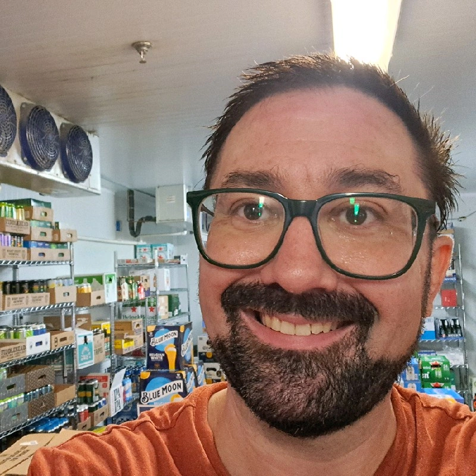

my journey
I
I
Cornell BS + MEng in CS. Building products, leading communities, and publishing research.
college
2020 – 2024 · Cornell University
I earned a BS and MEng in Computer Science from Cornell, and spent most of my time in the non-tech side of tech. As a Product Marketer at Cornell AppDev, a Business Team Member at Hack4Impact, and Career Development Co-Director, Social Co-Director, and Project Manager IN Women in Computing at Cornell (WICC), I learned that great products always have great people behind them.
For my Master's research project, I built an open, community-run library for Harmony, a Python-based concurrent programming language created by Professor RVR. I also co-authored a literature review on engineering communication education and presented at the SEFI Annual Conference.
big tech
2022 – 2026 · Google, YouTube
I joined Google as a product-oriented software engineer on YouTube Live Infra, the backend powering global YouTube livestreaming, and worked across the full product cycle: ideation, design, development, testing, launch, and documentation, from MVP to polished release.
My mentors during this chapter shaped my perspective as engineer, to build people-first instead of product-first, and I carry those lessons into everything I build.
II
II
Product-oriented SWE on YouTube Live Infra, the backend powering global livestreaming at scale.
III
III
Giving time back to the whole studio: owners, instructors, and clients alike.
freelance
2026 – Present · Boston, MA
After Google, I went independent. I work directly with pilates studio owners across Boston to build products that automate administrative workflows, client outreach, and payment systems.
Using agentic AI tools, I've reduced the operational overhead for instructors, front desk staff, and studio owners — giving them more time to teach and connect with their clients.
research & developer advocacy
2026 – present · Red Hat AI Innovation Team
Currently, I work as a jack of all trades on the Red Hat AI Innovation Team: researcher, developer, product owner, and developer advocate all at once.
i finally get to do what got me into tech:
building for people: in a world where product is placed above people, i get to build open-source tools that give power back to the people using them.
building to learn: i get to be on the forefront of AI innovation: always learning, always building.
My mission is to bridge the gap between users and developers, advocate for both, and make AI accessible to people of every background and experience level.
IV
dev advocacy
IV
Researcher, developer, product owner, and developer advocate at Red Hat AI Innovation.
together?
let's do something meaningful.
Tech Resume ↗thank you to my tech mentors

john